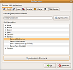
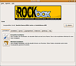

Rockbox Utility
Archivierte Anleitung
Dieser Artikel wurde archiviert, da er - oder Teile daraus - nur noch unter einer älteren Ubuntu-Version nutzbar ist. Diese Anleitung wird vom Wiki-Team weder auf Richtigkeit überprüft noch anderweitig gepflegt. Zusätzlich wurde der Artikel für weitere Änderungen gesperrt.
Zum Verständnis dieses Artikels sind folgende Seiten hilfreich:
Rockbox  ist ein freies Betriebssystem für portable Medienspieler ("MP3 Player"). Es kann als Ersatz- oder sogar als alternative Firmware auf verschiedenen Geräten aufgespielt werden und bietet in den meisten Fällen einen deutlich höheren Funktionsumfang als die Standardfirmware. So werden nicht nur 30 Audio-Codecs unterstützt und zahlreiche Funktionen rund um die Wiedergabe geboten, sondern sogar Spiele und anderweitige Anwendungen nachgerüstet. Obendrein verbrauchen viele der unterstützen Geräte nach der Installation von Rockbox weniger Strom, da die benutzten Decoder des ffmpeg-Projekts teils effizienter arbeiten als die von offizieller Seite.
ist ein freies Betriebssystem für portable Medienspieler ("MP3 Player"). Es kann als Ersatz- oder sogar als alternative Firmware auf verschiedenen Geräten aufgespielt werden und bietet in den meisten Fällen einen deutlich höheren Funktionsumfang als die Standardfirmware. So werden nicht nur 30 Audio-Codecs unterstützt und zahlreiche Funktionen rund um die Wiedergabe geboten, sondern sogar Spiele und anderweitige Anwendungen nachgerüstet. Obendrein verbrauchen viele der unterstützen Geräte nach der Installation von Rockbox weniger Strom, da die benutzten Decoder des ffmpeg-Projekts teils effizienter arbeiten als die von offizieller Seite.
Rockbox Utility (kurz rbutil) ist ein Hilfsprogramm, mit dem Rockbox komfortabel auf unterstützte Geräte aufgespielt werden kann. Folgende Funktionen werden geboten:
Installieren von Rockbox (mit oder ohne Bootloader)
Aktualisieren von Rockbox (stabile oder Beta-Version)
Installieren von Erweiterungen (Themes, Schriften, Spiele, Eingabehilfen)
Deinstallieren von Rockbox und dem Bootloader
Installation¶
Hinweis!
Fremdsoftware kann das System gefährden.
Da das Programm nicht in den offiziellen Quellen verfügbar ist, muss man es manuelle installieren, was aber sehr einfach zu bewerkstelligen ist. Eine vorkompilierte Version kann man für seine Architektur von der Projektseite herunterladen und entpacken[1]. Nun muss man die entpackte Datei ausführbar machen[5] und mit Root-Rechten[4] nach /usr/local/bin verschieben. Nun kann man noch einen Menüeintrag anlegen, ein passendes Icon bekommt man von rockbox.org  , und das Programm starten[2].
, und das Programm starten[2].
{kind=link}
Verwendung¶

Konfiguration¶
Nach man das Programm gestartet und das Gerät angeschlossen hat, kann man mit einem  -Klick auf "Ändern" und anschließend auf "Automatische Erkennung" nach dem Gerät suchen lassen. Hat das Programm das Gerät gefunden, kann man schon loslegen; alle anderen Einstellungen, bis auf die Sprache der Benutzeroberfläche, die aber an sich richtig sein sollte, sind nur Feintuning.
-Klick auf "Ändern" und anschließend auf "Automatische Erkennung" nach dem Gerät suchen lassen. Hat das Programm das Gerät gefunden, kann man schon loslegen; alle anderen Einstellungen, bis auf die Sprache der Benutzeroberfläche, die aber an sich richtig sein sollte, sind nur Feintuning.
| Konfigurationsreiter | |
| Name | Beschreibung |
| "Gerät" | Pfad und Typ des Geräts einstellen |
| "Proxy" | Proxy-Einstellungen für die Internetverbindung |
| "Sprache" | Spracheinstllungen für die Benutzeroberfläche |
| "Cache" | Einstellungen für den Download-Cache (Zwischenspeicher) des Programms |
| "TTS & Encoder" | Einstellungen für den Sprachencoder |
Verwalten¶
Hat man ein Gerät, auf dem Rockbox noch nicht installiert ist, sollte man die "Komplette Installation" wählen, die sowohl die aktuelle stabile Version als auch den Bootloader von Rockbox installiert. Will man eine bestehende Installation aktualisieren, wählt man "Rockbox installieren". Unter "Extras" und unter "Zugänglichkeit" findet man die Installationsroutinen für die Erweiterungen.
Hinweis:
Bei manchen Geräten müssen vorab die richtigen Einstellungen in der originalen Firmware getätigt werden, bevor Rockbox aufgespielt werden kann. Auf der Webseite finden sich für alle unterstützten Geräte Anleitungen mit Hinweisen zur Installation.
- Erstellt mit Inyoka
-
 2004 – 2017 ubuntuusers.de • Einige Rechte vorbehalten
2004 – 2017 ubuntuusers.de • Einige Rechte vorbehalten
Lizenz • Kontakt • Datenschutz • Impressum • Serverstatus -
Serverhousing gespendet von